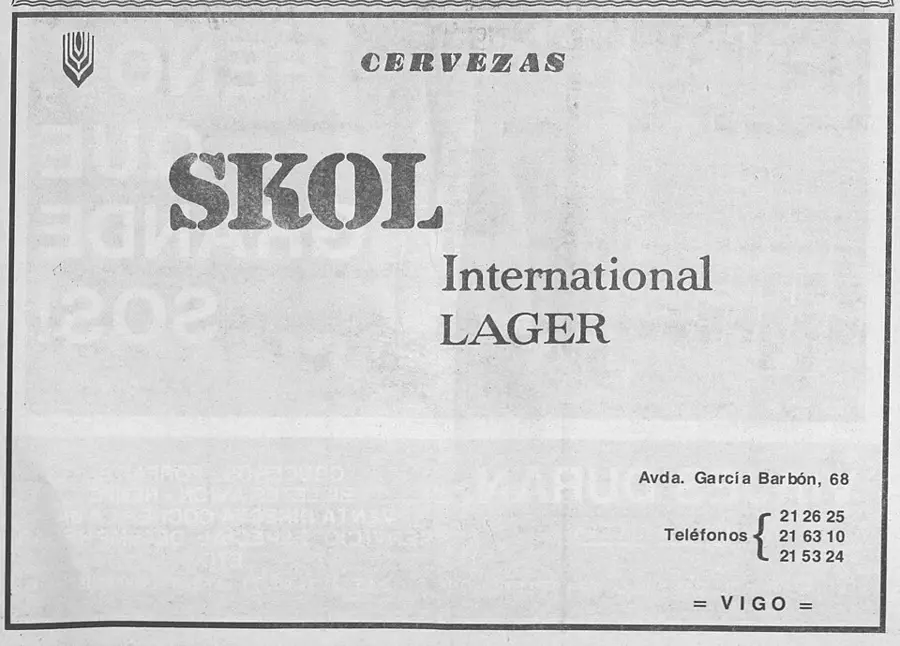

대표 로고대표 브랜드 마크
대표 로고대표 브랜드 마크스콜 Skol
스콜(Skol)은 스코틀랜드에서 처음 양조된 국제적인 라거 맥주 브랜드이다. 세계 여러 지역에서 서로 다른 회사들이 양조하고 판매하며, 이름은 스칸디나비아의 건배 구호 'skål'의 영어식 표기에서 왔다.
최종 업데이트
스콜은 어떤 브랜드인가
스콜은 여러 나라에서 서로 다른 회사가 생산하는 국제 라거 브랜드로, 처음에는 스코틀랜드에서 양조되었다. 이름은 스칸디나비아의 건배 구호 'skål'의 영어 변형이며, 한때 만화 캐릭터 Hägar the Horrible이 홍보에 쓰였다.
Carlsberg가 아프리카와 남아메리카를 제외한 전 세계에서 이 맥주를 양조하고 판매할 수 있는 라이선스를 보유한다. 아프리카 지역의 라이선스는 Unibra가, 브라질의 라이선스는 Ambev가 보유한다.
유럽에서는 루마니아와 터키에서도 생산·판매되며, 아시아에서는 말레이시아, 중국, 홍콩, 싱가포르에서 유통된다. 아프리카에서는 앙골라, 부룬디, 콩고민주공화국, 기니, 마다가스카르, 르완다에서 판매된다.
스콜은 어떻게 시작되고 성장했나
스콜은 Ind Coope가 스코틀랜드 Alloa에서 Graham's Golden Lager라는 이름으로 처음 양조한 라거이다. 1958년 스칸디나비아 느낌을 주려고 Graham's Skol로 이름을 바꿨으며, 양조 설비를 스웨덴에서 들여온 것이 배경이었다.
이후 이름은 Skol로 줄었다. 1964년 Allied Breweries(영국), Labatt(캐나다), Pripps-Bryggerierna(스웨덴), Unibra(벨기에)가 Skol International이라는 회사를 세워 전 세계에 라이선스를 주고 생산·판매할 수 있는 브랜드를 만들고자 했다.
이후 이 회사의 참여 구성은 크게 달라졌다.
스콜의 브랜드 아이덴티티는 무엇인가
여러 회사가 지역별 라이선스로 생산하는 국제 라거로, 스코틀랜드에서 시작해 스칸디나비아풍 이름을 앞세워 세계 브랜드를 지향했다.
스콜의 대표 제품과 서비스는 무엇인가
주력 제품은 라거 맥주 스콜이며, 영국에서는 알코올 도수를 2.8%로 낮춘 제품이 계속 유통된다. 브라질 시장에서는 감귤 맛이 나는 'Skol Beats'를 추가했으며, 파랑, 빨강, 초록 등 여러 맛이 있다.
더 새로운 라인으로 Skol Beats 진토닉 음료 계열이 있으며, 이 계열 제품은 모두 알코올 도수가 약 7.9%이다. 2005년 Australian International Beer Awards에서 포장 부문 금메달과 맛 부문 은메달을 받았다.
2012년에는 Monde Selection이 주관한 World Quality Selections에서 금상을 받았으며, 이는 스콜이 받은 두 번째 국제 상이었다.
스콜은 지금 어떤 상태인가
Carlsberg는 아프리카와 남아메리카를 제외한 전 세계에서 스콜을 양조하고 판매할 라이선스를 보유한다. 1992년 Allied Breweries와 Carlsberg의 합병으로 Carlsberg-Tetley's가 생겼고, 이 회사가 스콜 생산을 Alloa에서 리즈의 양조장으로 옮겼으나 그 양조장은 2011년 문을 닫았다.
스콜은 지금도 영국에서 유통되며 알코올 도수는 2.8%로 낮아졌다.
스콜 로고는 어떻게 변해왔나
대표 로고대표 브랜드 마크사진으로 보는 스콜의 역사

자주 묻는 질문
스콜는 어느 나라 브랜드인가요?
스콜는 영국의 식음료 브랜드입니다.
스콜는 언제 설립되었나요?
스콜는 1959년 설립되었습니다.
스콜의 브랜드 아이덴티티는 무엇인가요?
여러 회사가 지역별 라이선스로 생산하는 국제 라거로, 스코틀랜드에서 시작해 스칸디나비아풍 이름을 앞세워 세계 브랜드를 지향했다.
스콜의 대표 제품은 무엇인가요?
주력 제품은 라거 맥주 스콜이며, 영국에서는 알코올 도수를 2.8%로 낮춘 제품이 계속 유통된다.
스콜는 현재 어떤 상태인가요?
Carlsberg는 아프리카와 남아메리카를 제외한 전 세계에서 스콜을 양조하고 판매할 라이선스를 보유한다.
스콜의 공식 웹사이트는 어디인가요?
스콜의 공식 웹사이트는 http://www.skol.com.br/ 입니다.
출처와 검증
스콜 관련 참고: 공식 웹사이트 · 위키데이터 Q152532 · 한국어 위키백과 · 영어 위키백과. 브랜드명은 한글과 원어를 함께 표기하되 데이터에 없는 표기는 만들지 않습니다. 기원 국가·설립연도는 검수된 정의문에서 확인된 값을 우선하고, 없을 때만 공식 웹사이트 URL이 일치하는 위키데이터 개체의 값을 씁니다. 위키데이터 값은 2026-11-07 기준입니다.